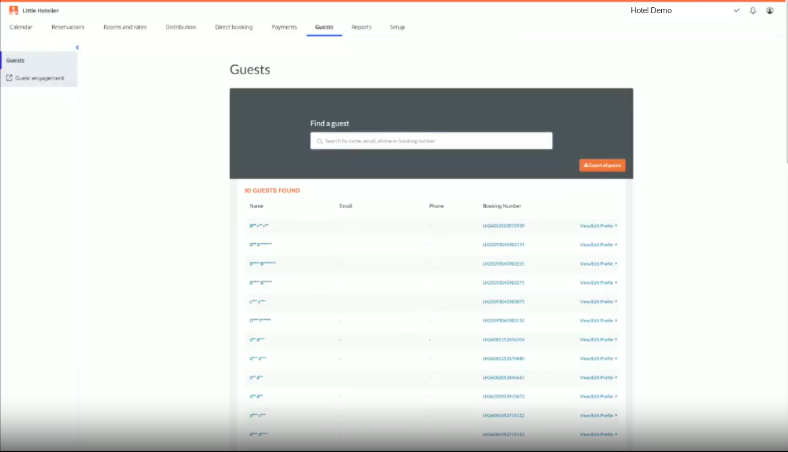
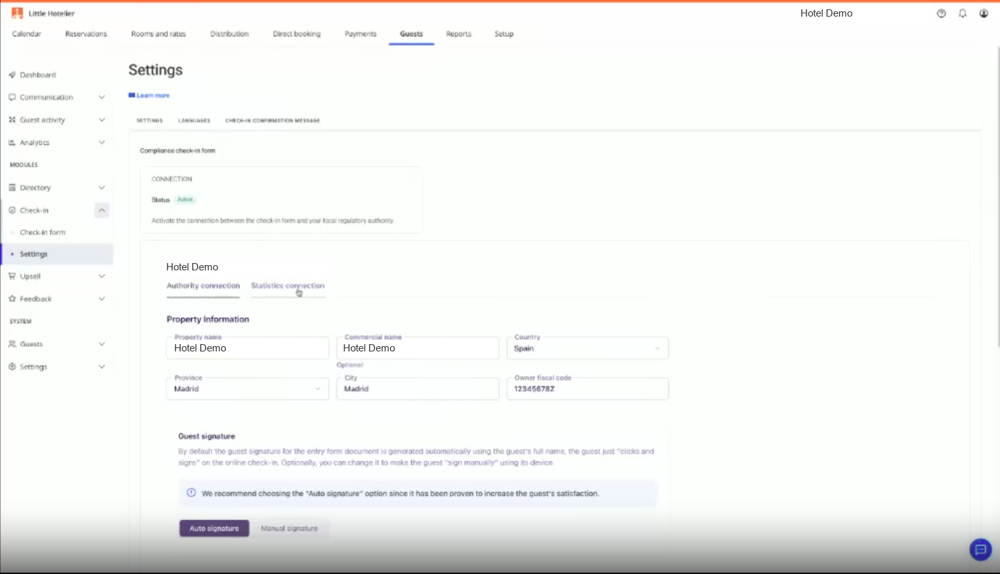
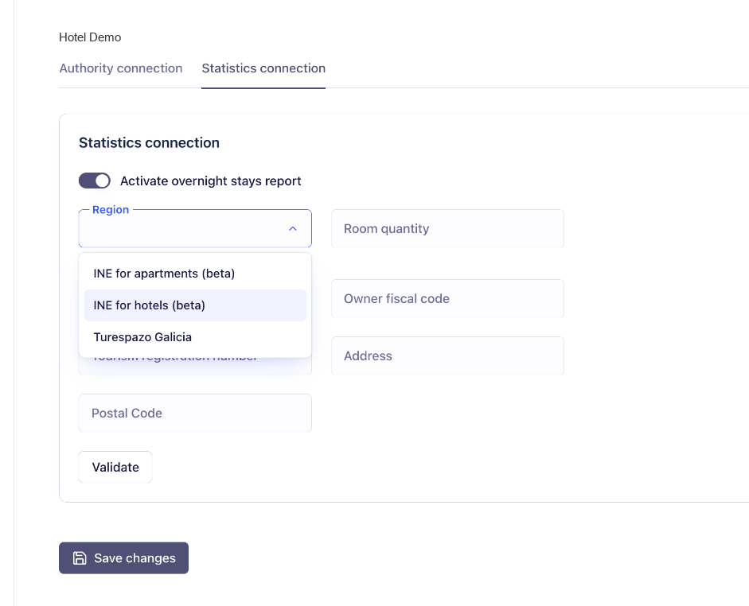

Todos los alojamientos de España tienen que comunicar los datos de cada huésped a las autoridades en las 24 horas siguientes a su entrada (Real Decreto 933/2021). Guest Engagement lo hace solo.
El huésped completa el check-in onlineCompleta sus datos, escanea su documento y firma desde el móvil, antes de llegar.
Los datos se reportan a la autoridadDe forma automática, en tiempo y forma: SES.Hospedajes, Mossos d'Esquadra o Ertzaintza, según dónde esté el alojamiento. Dentro de las 24 horas.
Los datos quedan almacenadosOnline, durante el tiempo que exige la ley. Se configura una vez por alojamiento.
Frase para la demo"Little Hotelier cumple con la legalidad: tu huésped completa el check-in online y Little Hotelier reporta el parte de viajeros a SES.Hospedajes de forma automática, en tiempo y forma. Lo configuras una vez y te olvidas."
Dónde está el alojamiento
A quién se envían los datos
Mayor parte de España
SES.Hospedajes (Ministerio del Interior)
Cataluña
Mossos d'Esquadra
País Vasco
Ertzaintza
Usa las palabras del cliente: "registro de viajeros", "parte de viajeros", "SES.Hospedajes", "check-in online". No "compliance" ni "formulario de llegada".
2
Dónde está el módulo
Hoy la configuración del registro de viajeros está dentro de los ajustes del check-in.
Guests›Guest engagement›Check-in›Settings›Compliance check-in form
Nombres tal como aparecen hoy en el panel (en inglés).
A confirmar: nombres del menú si el panel está en español

Captura 1 · Guests: el acceso a Guest engagement está en la columna de la izquierda
En una demo, ve directo a la ruta. Son 4 clics y el cliente no los encontrará solo la primera vez.
Propuesta en curso: un ítem "Registro de viajeros" en el primer nivel de Guest Engagement. Si sale, esta página cambia.
3
Configuración paso a paso
Se hace una vez por alojamiento. Después, cada check-in online se envía solo.
Abre el formulario de cumplimiento
En Check-in > Settings, elige Compliance check-in form ("Automatically submit guest details to the relevant police authority upon check-in") y pulsa Save changes.
Captura 3 · Selección del formulario de cumplimiento
Elige la autoridad
SES.Hospedajes, Mossos d'Esquadra o Ertzaintza, según la comunidad del alojamiento.
Captura 4Formulario de conexión: selector de autoridad (SES.Hospedajes / Mossos d'Esquadra / Ertzaintza)
Conecta con SES.Hospedajes
Rellena los datos que pide el formulario para conectar el alojamiento con la autoridad.
A confirmar: campos exactos de cada autoridad
Hoy pide la información del alojamiento (Property name, Commercial name, Country, Province, City, Owner fiscal code) y cómo firma el huésped (Auto signature recomendada).

Captura 5 · Compliance check-in form: Authority connection con la información del alojamiento
Captura 6Formulario de conexión con los Mossos d'Esquadra
Captura 7Formulario de conexión con la Ertzaintza
Guarda y comprueba la conexión
Al guardar, la conexión queda activa para ese alojamiento. Si el cliente tiene varios alojamientos, repite los pasos 2 a 4 en cada uno.
Captura 8 · Connection: Status "Active" cuando la conexión está hecha
Haz una reserva de prueba y completa tú el check-in online para enseñar el recorrido entero.
4
Qué ve el huésped
Recibe el enlace al check-in online antes de llegar y lo completa desde el móvil.
Captura 9Email al huésped con el enlace al check-in online
Captura 10Check-in online: datos personales
Captura 11Check-in online: subida del documento de identidad
Captura 12Check-in online: firma digital
Captura 13Pantalla de confirmación del check-in
Captura 14Check-in online en otro idioma (ej. inglés)
Lo que conviene contar
Lo hace desde el enlace que recibe, cuando le viene bien.
Hay que comunicar los datos de cada huésped, no solo del titular de la reserva.
Al llegar, la recepción solo entrega la llave.
5
Qué pasa después
Cuando el huésped termina el check-in online, sus datos se reportan automáticamente a la autoridad dentro de las 24 horas siguientes a su entrada y quedan almacenados online durante el tiempo que exige la ley.
Captura 15Dónde ve el hotel los registros enviados (listado o detalle de la reserva)
Estado del envío
A confirmar con el equipo técnico de Chekin si el SDK lo expone
Enviado Los datos llegaron a la autoridad.
Pendiente El huésped aún no ha hecho el check-in online.
Error La autoridad no aceptó el envío. Hay que revisar los datos.
Si algo falla
El huésped no hizo el check-in online: reenvía el enlace o pídele que lo complete al llegar.
El envío da error: revisa los datos del huésped y de la conexión. Si sigue fallando, escala a soporte.
A confirmar: proceso de escalado de errores entre SiteMinder y Chekin6
Próximamente: encuesta de ocupación del INE
Próximamente
Solo para alojamientos que el INE selecciona en su muestra. No es 100% automático: se envía cuando el INE lo pide.
Configuración única por alojamiento
Tipo de alojamiento, categoría, número de apartamentos, plazas totales, razón social, NIF, número de registro turístico, dirección y persona de contacto. Este paso no envía nada al INE.
Cada vez que el INE pide un informe
El hotel elige propiedad y mes, introduce el número de pedido y el código de control que el INE envía por carta o email, y añade el personal de ese mes (no remunerado, fijo y eventual). Se genera el informe y se envía.
Dudas típicas
"Categoría": ¿qué son las llaves?
Los apartamentos turísticos se clasifican por llaves, de 0 a 5, como las estrellas en hoteles. La asigna el Registro de Turismo autonómico y aparece en el certificado de inscripción.
"Plazas totales": ¿cómo se cuentan?
Camas fijas según el registro o licencia. Una cama doble cuenta como 2. Sofás cama y camas supletorias no cuentan.
¿Hay que poner el número de pedido cada mes?
Se introduce en cada informe, pero suele mantenerse mientras el alojamiento siga en la muestra.
¿Y en Galicia?
Galicia usa otro sistema: Turespazo.

Captura 16 · Pantalla real de Guest Engagement (cuenta de prueba): Statistics connection. Falta la versión en español.7
Preguntas de clientes
¿Envía Guest Engagement los partes de viajeros a la policía?
Sí, en España. A SES.Hospedajes, a los Mossos d'Esquadra en Cataluña o a la Ertzaintza en el País Vasco, según dónde esté el alojamiento.
¿Quién tiene que hacer el registro de viajeros?
Todos los alojamientos: hoteles, hostales, pensiones, casas rurales, apartamentos y viviendas turísticas (Real Decreto 933/2021).
¿Cuánto tiempo hay para enviar los datos?
24 horas desde la entrada del huésped.
¿Hay que configurarlo con cada reserva?
No. Una vez por alojamiento.
Tengo alojamientos en Barcelona y en Madrid. ¿Funciona?
Sí. Cada alojamiento se conecta a su autoridad: Barcelona a los Mossos d'Esquadra, Madrid a SES.Hospedajes.
¿Dónde quedan los datos?
Almacenados online durante el tiempo que exige la ley.
¿Está en el plan Basics?
Guest Engagement es un add-on del plan Pro.
No hables de importes de multas ni de fechas de facturación electrónica. Si preguntan, remite a la información oficial.
8 · For Tom
Screenshots we need from SiteMinder
To finish this kit we need the screenshots below, from a Spanish test property, with the dashboard in Spanish. Please send them for Little Hotelier and, where the screen is different, for SiteMinder too. Dummy guest data only.
#
Screen
State / what should be visible
LH
SM
Where the module is
1
Main dashboard, Guests menu open
Guest Engagement visible in the menu
✓
✓
2
Guest Engagement > Check-in > Settings
Entry point to the compliance form visible
✓
✓
Setup
3
Check-in settings
Online check-in switched on
✓
✓
4
Compliance form: authority selector
Dropdown open showing SES.Hospedajes, Mossos d'Esquadra, Ertzaintza
✓
✓
5
SES.Hospedajes connection form
All fields filled in with test data
✓
✓
6
Mossos d'Esquadra connection form
All fields visible
✓
–
7
Ertzaintza connection form
All fields visible
✓
–
8
After saving
Confirmation message or "connected" status
✓
✓
Guest view (mobile)
9
Guest email with online check-in link
Spanish version
✓
✓
10
Online check-in: personal details
Mobile, Spanish
✓
–
11
Online check-in: ID scan
Mobile, document being scanned
✓
–
12
Online check-in: digital signature
Mobile, signature drawn
✓
–
13
Online check-in: confirmation
Mobile, final screen
✓
–
14
Online check-in in English
Any step, to show languages
✓
–
After check-in
15
Where the hotel sees sent registrations
List or reservation detail with at least one sent guest
✓
✓
16
INE setup form
Fields visible (Region, Housing category, Total places…). Once live, without the "Beta" label
✓
✓
"–" means we can reuse the Little Hotelier screenshot because the guest flow is the same. Tell us if that is not the case.
Also helpful: the exact Spanish names of the dashboard menus, and whether the reservation shows a sent / pending / error status.
Notas
Bloqueado parcialmente: faltan las capturas. Cada hueco gris tiene número y nombre; al llegar las capturas a reference/screenshots/ se cambian una a una.
Idioma: la guía va en español (para ventas, soporte y demos en España). La lista de capturas va en inglés porque se le envía a Tom.
PDF: botón "Guardar como PDF" arriba. Cada sección sale en una página A4.
A confirmar: nombres del menú en español, campos de cada formulario de conexión, estado del envío en la reserva, escalado de errores, fecha de INE apartamentos y disponibilidad de Guest Engagement por plan.